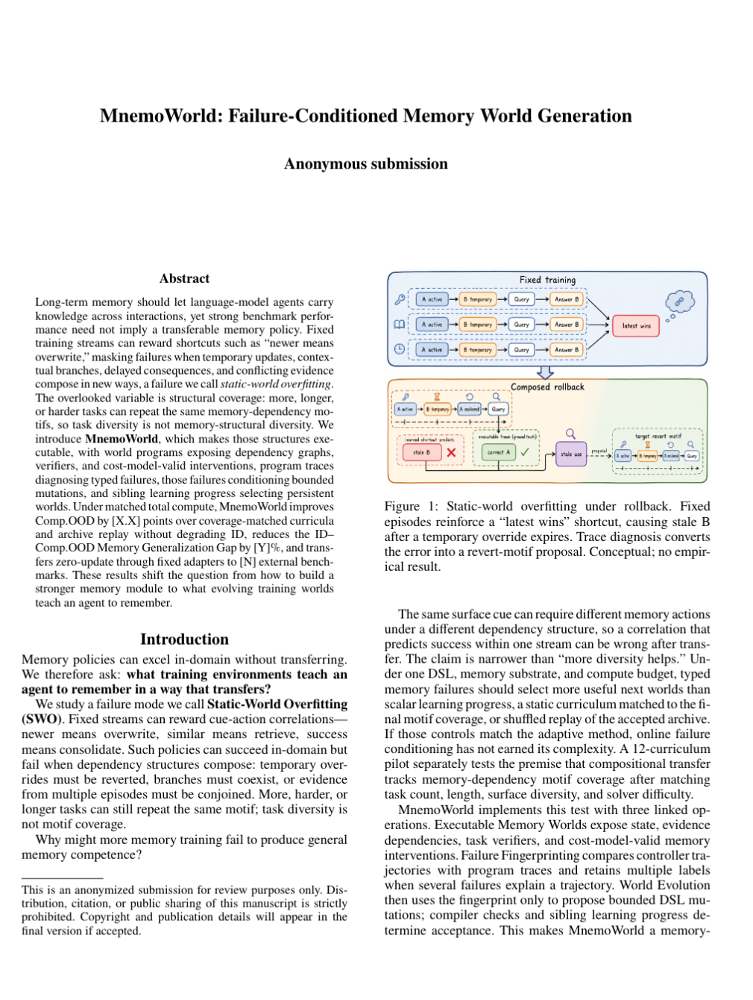

DOC INDEX · 精确匹配CHUNK INDEX · 语义检索AGENTIC SEARCH · 代码证据02 / AGENTIC SEARCH业务与代码知识库以代码知识为核心、文档知识为指南的后端知识库。查看完整案例 ↗
CO-FIRST AUTHOR · IN SUBMISSIONMemoWorld失败条件化的 Memory World 生成方法，面向持续演化记忆架构的组合泛化。查看论文与方法 ↗
Agent LoopMemoryRecoverySafetyLEARN-WORKBUDDY开源 Agent HarnessProvider-neutral Runtime、长任务上下文、恢复、权限与审计。查看核心贡献 ↗
A · ACTIONTool + LangGraph + SFT→GRPO实现 Router-Planner-Executor-Verifier-Synthesizer；构造多跳回放集，以 LoRA SFT 学协议、GRPO 优化工具路径与停止策略。
RUNTIMEProvider-neutral Agent Loop统一 Anthropic、OpenAI Responses / Chat、DeepSeek 与 Offline Mock 的工具协议。